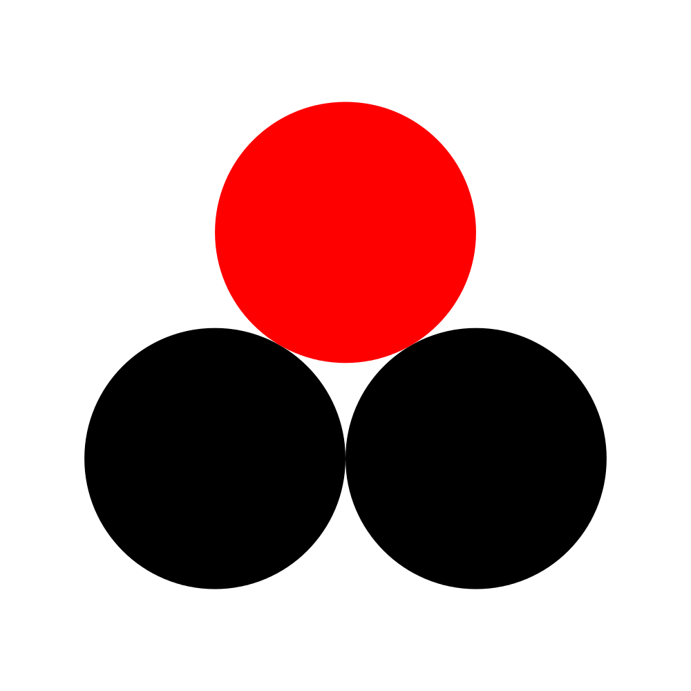
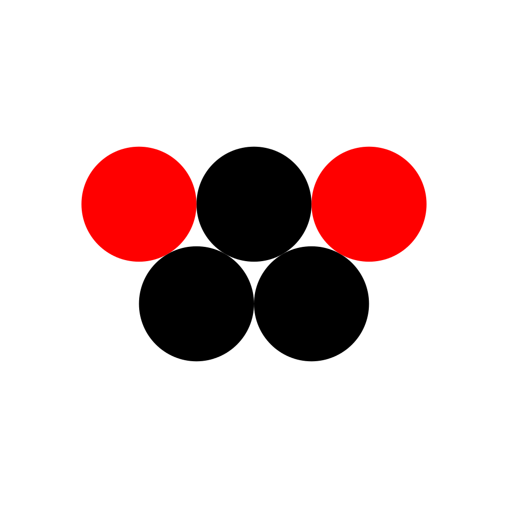
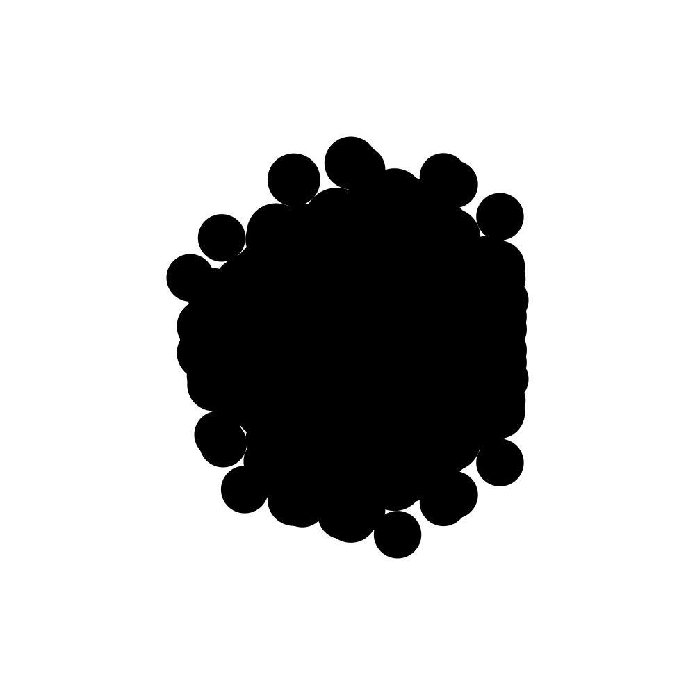
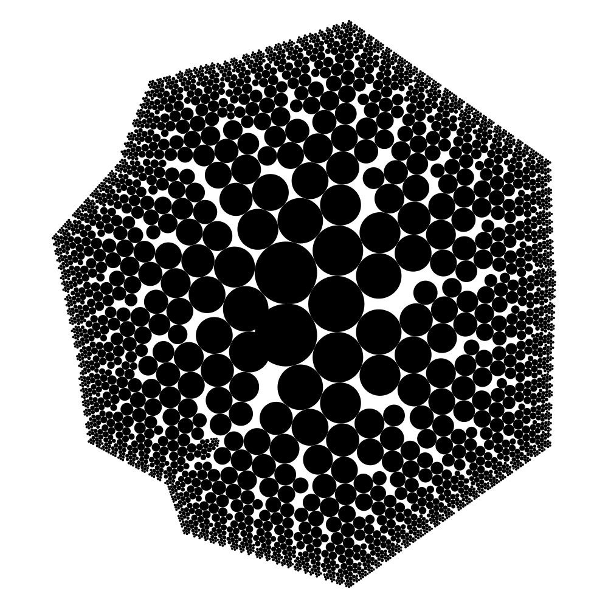
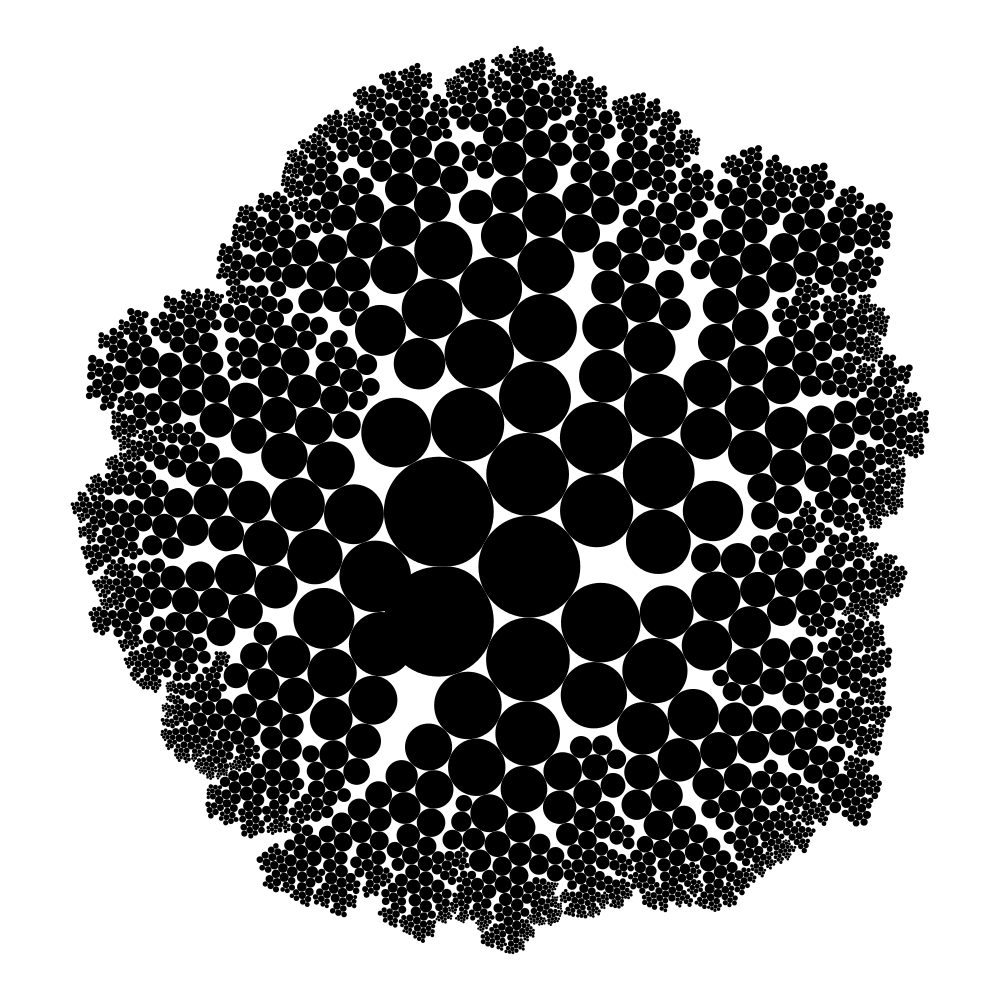

Circle packing 2x2
Foreword
Welcome to this new tutorial article. Contrary to the 2 previous ones, here and here, that were dedicated to a specific artwork, this third tutorial will be focused instead on an algorithm.
It will first describe the main concept behind the computation, then explore some simple ways the process can be modified or extended to produce different designs.
I hope it will be the occasion for you to see how thinking about an algorithm can actually be a very useful tool to develop new design ideas,
and even more how it can be a strong stimulus to your creativity.
Let's dive in.
The 2x2 rule
In this previous tutorial, I introduced how 2 adjacent circles can be used as a anchor to assemble patterns of circles.
Another way to consider this process is to note that given a pair of adjacent circles, a radius and a side, a new circle can be computed, as shown in the picture below.

This definition assumes that the pair of adjacent circles is ordered : a given circle can be obtained from a given pair of parents, a radius, and a side, or from the same radius, with the pair of parents reversed, and the reversed side.
The key point to note now is that when the new circle is added to the patterns, 2 new pairs of adjacent circles are created, that can be used to create 2 new circles:

And of course this process can be iterated again, to give:

Not a very exciting result though. So let's introduce some variability...
Radius diffusion
The previous picture is not very exciting because the produced circles are identical, creating a pattern too uniform.
We can make things more interesting by using some additional rules when computing the circles.
Instead of using the same radius each time, we can use to compute each new circle a new radius equals to a ratio of the radiuses of the parents..
For example, with a ratio of 0.9, we get:
Better but not exactly what we intended to get. The problem is that along the iterations, the process creates overlapping circles, that are blurring the overall design. To avoid this effect, we have to add a collision detection mechanism, that prevents creating a circle if he is colliding some previous ones (I will not detailed this collision detection algorithm here, it will be the subject of coming article). Adding this check, we obtain, with the same ratio:

Nice !
Randomization
By varying the size of the circles during the iteration, we got a first interesting picture.
However, one may find the result still a bit too smooth, too mathematical.
A good way to add some variability is to add a bit of randomness: instead of using a fixed ratio, we can use for example a random ratio picked from a fixed interval.
For example, with the interval (1.0, 0.8), we can get:

Quite nice indeed !
Equilibrium
We got a first nice effect with the previous algorithm 's variation. However, we can go even a bit further by noticing that nothing prevent us from using an interval that is balanced, with some ratios bigger than 1.0 !
For example, if we use an interval of (1.2,0.8), we can get a balanced circle packing pattern, with a nice natural effect:

Packing ... for now
Let's summarize: from a simple local rule describing how to generate one circle from 2 adjacent ones, we were able to create an algorithm to produce circle packing patterns, by iterating the local process and controlling it with collision detection.
We also saw that by introducing a mixed of controlled and random variability, we can already get some pretty nice circle patterns.
But of course, we barely scratched the surface of the numerous other ways the 2x2 algorithm can be twicked, some simple ones as varying the colors, and some far less obvious ones, that will produce very suprising results.
So stay tuned for the second part of this exploration, and let me know in the comments which aspect you would like to dive in first. A bientot.